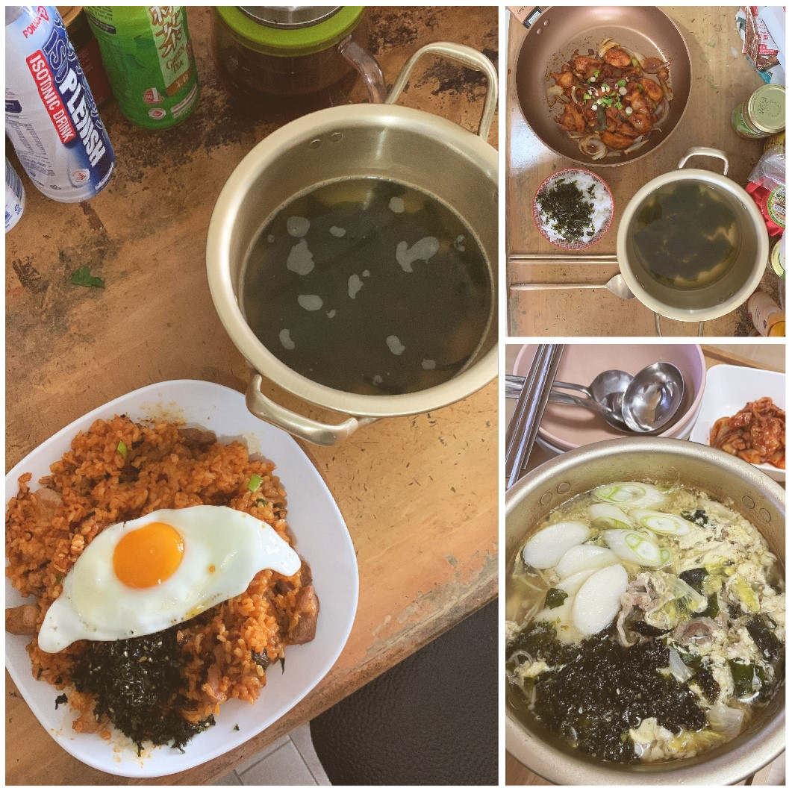

About Me
How I Got Here.
I must admit that I was one of those individuals that spent years feeling unsure about their career path. I spent 10 years to figure out that Data Science was my calling, it wasn't an easy journey (probably more downs than ups) but I'm thankful to be where I am today. I started my career as a hotelier in 2017 after graduating with a bachelor's in Tourism, Events Management & Hospitality. After 2.5 years in the frontline, I decided to try for a change and joined a travel agency as sales in 2019.
Then the pandemic struck.
I made a move to NTUC as a temp admin, supporting the team in administrative duties and mostly Excel based work. As the situation worsened, I was recommended to move to e2i, where I supported the disbursement of training allowance (NTUC Training Fund) for Self-Employed Persons (SEPs). Once my contracted ended in Jul 2021, I was offered a full-time position as a Career Centre Specialist, where I honed my Excel, communication and analytical skills.
I have gain a wealth of knowledge in communications and time management over the years, and I continued to learn by taking Data Analytics courses from Coursera, NTUC LearningHub, ICDL and Codecademy. Fast forward till today, I am now a Data Analyst at DBS Bank (Consumer Banking Group) while pursuing my 2nd bachelor's degree in Data Science & Analytics.
Hello, this is me and welcome to my portfolio!
Work Experience
Data Analyst - Technology in Finance Immersion Programme (TFIP) | Institute of Banking & Finance (Jan' 23 - present)
Summary: 18 months' traineeship programme with 2 components: 6 months' structured training with DigiPen Institute and 12 months' attachment to DBS bank.
- Programming Methodologies: Python
- Programming Paradigms: Advanced Python
- Data Structures and Algorithms with Python
- Databases and Data Modelling
- Applied Mathematics and Statistics for Data Analytics
- Machine Learning
- Data Visualisation
- Data Engineering: Big Data Technologies
- Dolor etiam magna etiam.
- Sagittis lorem eleifend.
- Felis dolore viverra.
Career Centre Specialist | Employment & Employability Institute (e2i) (Aug '21 - Nov'22)
Summary: Responsible for managing day-to-day career centre operations and curated multiple standard operational processes within the office. Organize, prioritize and delegate tasks effectively to ensure all administrative work is done competently and within deadlines. Enhanced colleague's productivity by curating new tools to overcome system limitation, cutting administrative bloat by returning results in seconds instead of hours. Volunteered to take on additional responsibilities and supported another department in training of new staff and analyzing workforce data.
- Deployment & payment processing for associate coaches
- General system, workflow & SOP enquiries on a company level.
- Safeguard and protect company's interest by controlling user access rights to systems.
- Prepare monthly workforce reports and highlight trends & provided recommendations for upper management.
- Restored 'dead' Excel files' formulas
- Used formula based files to reduce colleagues' administrative workload
- Analyzed, cleaned and prepared reports for upper management
Self-Employed Person (SEP) | Employment & Employability Institute (e2i) (Jul' 20 - Jul'21)
Summary: Rendered support to Self-Employed Person (SEPs) during the pandemic of validating & analyzing over 15,000 records for disbursement of training allowance (NTUC Training Fund). Took on additional responsibilites of managing general inbox and as well as training of new staff.
- Prepare Macro Based templates for team to use, saving manhours in terms of formatting reports.
- Ensuring data accuracy & legitimacy to safeguard interest of public funds.
- Assist in overseeing operations and guiding staff on various SOPs (such as Personal Data) and workflow matters.
- Review claims workflow to improve productivity, & monitoring staff performance
- Providing information to public via e-mail & telephone, such as assistance in proceeding with claims, feedback & issues mediation and directing applicants to various agencies for assistance.
Qualifications
Tertiary Education
Bachelor of Science - BS, Data Science & Analytics | University of Portsmouth (Jun '22 - Dec '23)
- Applied Machine Learning and Data Mining
- Big Data
- Data Structures and Algorithms
- Database Principles
- Software Engineering Theory and Practice
- Ethical Hacking
- Business Analytics
- Open Innovations in Data Science
- Malware Forensics
- Internet of Things
- Individual Project (Engineering)
Specialist Diploma in Data Analytics & Data Engineering | Digipen Institute of Technology (Jan '23 - Jul '23)
- Programming Methodologies: Python
- Programming Paradigms: Advanced Python
- Data Structures and Algorithms with Python
- Databases and Data Modelling
- Applied Mathematics and Statistics for Data Analytics
- Machine Learning
- Data Visualisation
- Data Engineering: Big Data Technologies
Professional Certificates
Things I Do Out-of-Work
 Of course there's more to life than just work; having some downtime also helps me to refocus and refresh my mind. While I'm not at work, my hobbies include video gaming for my mind, where my genre of choice will be single-players. Some of my favourite games include The Last Of Us, The Witcher 3, Horizon Zero Dawn & Forbidden West, God of War (from 2005 onwards), Red Dead Redemption 2, Bioshock, and many more. I also enjoy watching videos explaining the mysteries of the universe, latest & greatest in computer science, PC hardware reviews, and the latest tech news.
As for the body, I will go out for runs, gym or shoot some hoops 2-3x a week. My usual routine will be a 4km run followed by 3 sets of static exercises.
If I'm not doing either of those, then most likely you'll find me in the kitchen, learning to whip up something. My self-proclaimed signature cuisine would be Korean, such as Tteokguk, Dak-Galbi & Kimchi Fried Rice.